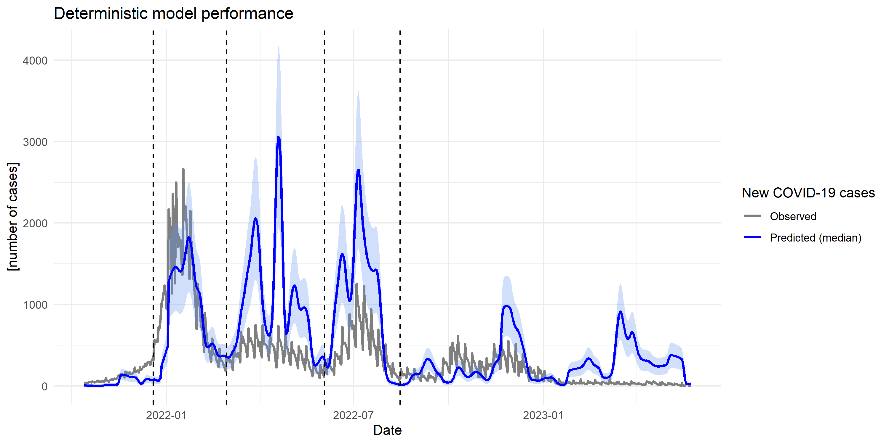

Daily new COVID-19 cases observed in the study area and predicted by the deterministic model. The dashed
vertical lines indicate the waves' limits.

- Wave 1: December 19, 2021 - February 28, 2022
- Wave 2: March 1, 2022 - June 2, 2022
- Wave 3: June 3, 2022 - August 15, 2022
- Off-wave periods: October 13, 2021 - December 18, 2021, and August 16, 2022 - May 24, 2023